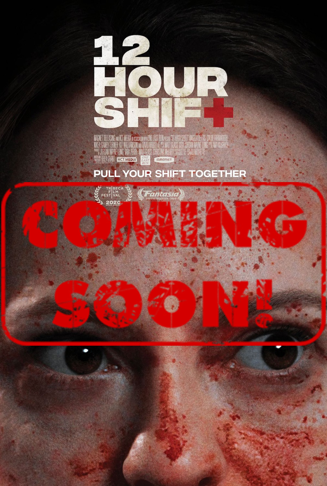
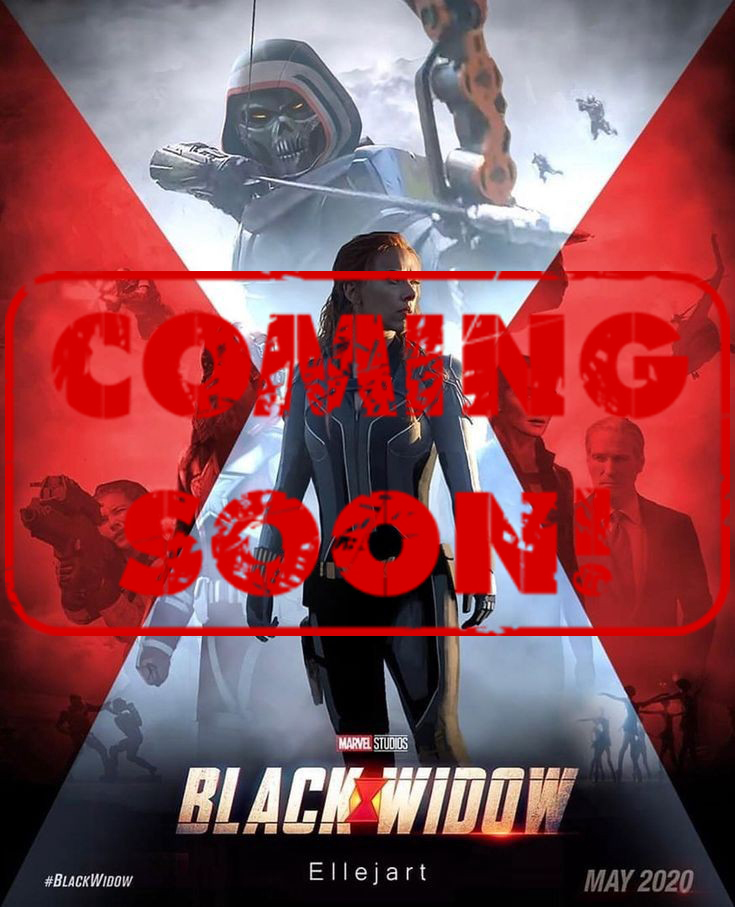

Ava (September 2020) Ava is a deadly assassin who works for a black ops organization, traveling the globe specializing in high profile hits. When a job goes dangerously wrong she is forced to fight for her own survival.
Kajillionaire (September 2020)
A woman's life is turned upside down when her criminal parents invite an outsider to join them on a major heist they're planning.

The Last Shift (September 2020)
Stanley's last shift at his fast food job takes an unexpected turn.
Possessor (October 2020)
Possessor follows an agent who works for a secretive organization that uses brain-implant technology to inhabit other people's bodies - ultimately driving them to commit assassinations for high-paying clients.

12 Hour Shift (October 2020)
It's 1999 and over the course of one 12 hour shift at an Arkansas hospital, a junkie nurse (Angela Bettis), her scheming cousin (Chloe Farnworth) and a group of black market organ-trading criminals (Mick Foley, David Arquette, Dusty Warren) start a heist that could lead to their imminent demises.
12 Hour Shift (October 2020)
It's 1999 and over the course of one 12 hour shift at an Arkansas hospital, a junkie nurse (Angela Bettis), her scheming cousin (Chloe Farnworth) and a group of black market organ-trading criminals (Mick Foley, David Arquette, Dusty Warren) start a heist that could lead to their imminent demises.

Black Widow (November 2020)
A film about Natasha Romanoff in her quests between the films Civil War and Infinity War.
Black Widow (November 2020)
A film about Natasha Romanoff in her quests between the films Civil War and Infinity War.